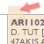
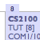
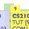
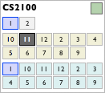

Step 3: What you have to know
Drag and drop any time-span of a module anywhere in the screen, provided that they have a small tab in their first cell, so you can hold and drag it. A grayed time-span is fixed and you cannot drag it.
So when you hold the tab and start dragging, the application will immediately show you any available slot(s) (a blue slot) that you can drag onto.
When you find your favourite slot and want to drop on it, continue to hold the tab, and touch the slot. The slot will now turns yellow. Drop it, and you will have successfully swapped it.
So this will be the last thing to know. This is Module Viewer. Since this application is built on ripping information from CORS Module Listing, nothing can be done to predict unusual behaviour of certain time-span in a module. To overcome this, I have created this little module viewer. Each small button represents an available time slot of a module. They are grouped in Lecture, Tutorial, and Laboratory. You can click on them, swapping their status between on board, fixed on board, and off board